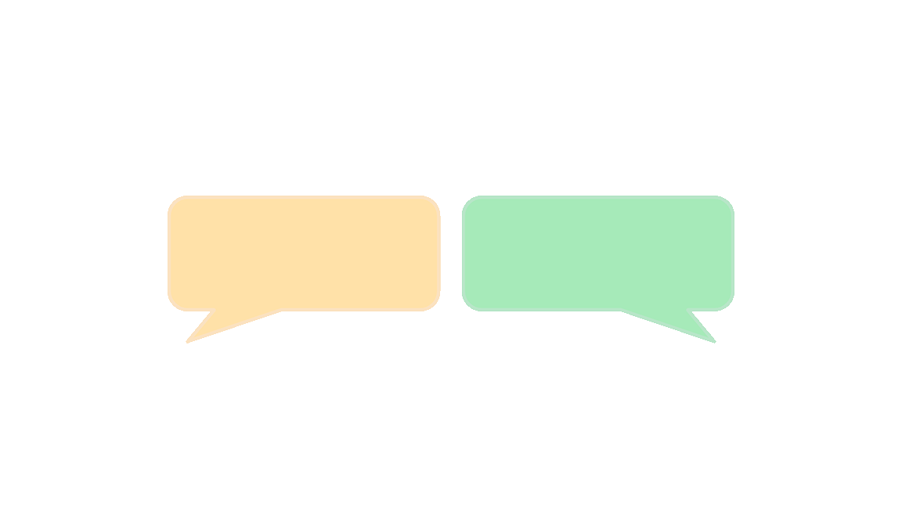

Da el paso definitivo.
Rellena el formulario de inscripción y transforma tu forma de entender el mundo.
Inscribirse ahora →

Rellena el formulario de inscripción y transforma tu forma de entender el mundo.
El Club de Debate me ayudó a perder el miedo a hablar en público.
Ana
Derecho
He hecho amistades increíbles y me ha permitido viajar representando a la UMU por España.
José Fernando
Ingeniería Informática
Ha sido un antes y un después en mi vida, un nuevo nacimiento, un nacimiento racional, lleno de colores y sabores nuevos, más potente que la mejor droga de diseño... sentí ríos de felicidad recorrer mis brazos. Pensé que me estaba dando un 'jari', pero los debatientes aseguraron mi integridad física. Todo era el éxtasis de subirme a la tarima y expresar mis ideas.
Rocío
Derecho & ADE